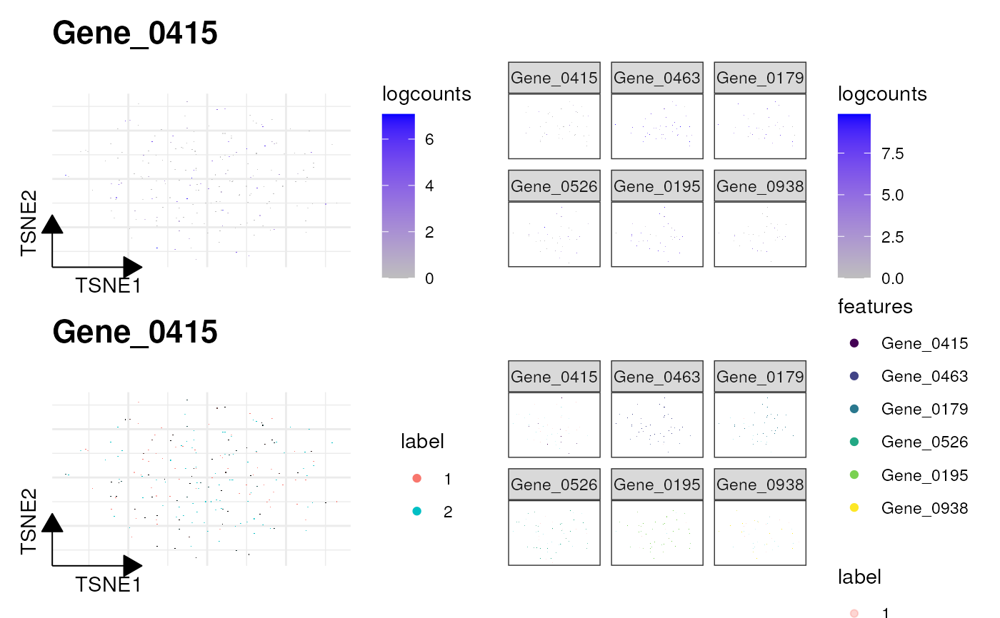

sc_feature
sc_feature(
object,
features,
dims = c(1, 2),
reduction = NULL,
cells = NULL,
slot = "data",
mapping = NULL,
ncol = 3,
density = FALSE,
grid.n = 100,
joint = FALSE,
joint.fun = prod,
common.legend = TRUE,
...
)
# S4 method for Seurat
sc_feature(
object,
features,
dims = c(1, 2),
reduction = NULL,
cells = NULL,
slot = "data",
mapping = NULL,
ncol = 3,
density = FALSE,
grid.n = 100,
joint = FALSE,
joint.fun = prod,
common.legend = TRUE,
...
)
# S4 method for SingleCellExperiment
sc_feature(
object,
features,
dims = c(1, 2),
reduction = NULL,
cells = NULL,
slot = "data",
mapping = NULL,
ncol = 3,
density = FALSE,
grid.n = 100,
joint = FALSE,
joint.fun = prod,
common.legend = TRUE,
...
)Seurat object
selected features (i.e., genes)
selected dimensions (must be a two-length vector) that are used in visualization
reduction method, default is NULL and will use the default setting store in the object
selected cells to plot (default is all cells)
slot to pull expression data from (e.g., 'count' or 'data')
aesthetic mapping
number of facet columns if 'length(features) > 1'
whether plot the 2D weighted kernel density, default is FALSE.
number of grid points in the two directions to estimate 2D weighted kernel density, default is 100.
whether joint the multiple features with joint.fun,
default is FALSE.
how to joint the multiple features if joint=TRUE,
default is prod.
whether to use facet_wrap to display the multiple
features, default is TRUE.
additional parameters pass to 'scattermore::geom_scattermore()'
dimension reduction plot colored by selected features
library(scuttle)
library(scater)
library(scran)
library(ggplot2)
sce <- mockSCE()
sce <- logNormCounts(sce)
clusters <- clusterCells(sce, assay.type = 'logcounts')
colLabels(sce) <- clusters
sce <- runTSNE(sce, assay.type = 'logcounts')
set.seed(123)
genes <- rownames(sce) |> sample(6)
p1 <- sc_feature(sce, genes[1], slot='logcounts', reduction = 'TSNE')
p2 <- sc_feature(sce, genes, slot='logcounts', reduction = 'TSNE')
f1 <- sc_dim(sce, slot='logcounts', reduction = 'TSNE') +
sc_dim_geom_feature(sce, genes[1], color='black')
f2 <- sc_dim(sce, alpha=.3, slot='logcounts', reduction = 'TSNE') +
ggnewscale::new_scale_color() +
sc_dim_geom_feature(sce, genes, mapping=aes(color=features)) +
scale_color_viridis_d()
p1 + p2 + f1 + f2
